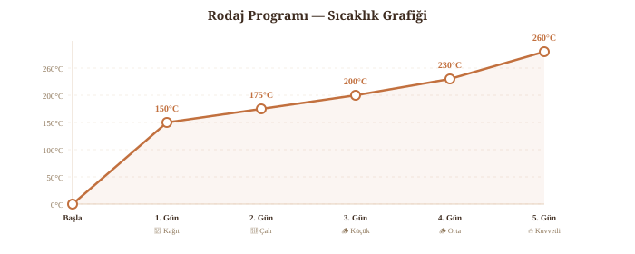

Rodaj (Kürleme) Programı
Fırın bittikten sonra en az 1 hafta beton/harç kürlenmesi için bekleyin (nemli tutun!). Sonra kademeli ısıtma:

Pişirme Rehberi
Odun fırınının en büyük avantajı tek bir yakmayla saatler boyunca farklı sıcaklıklarda pişirme yapabilmenizdir. Ateş söndükten sonra fırın kademeli olarak soğur — bu "düşen ısı" prensibini kullanarak bir akşamda pizza, ekmek ve tandır yemeklerini art arda pişirebilirsiniz.
Düşen Isı Sıralaması (Tek Yakma)
Isı transferinin %73'ü kubbeden radyasyonla gelir (Falciano et al., 2023). İyi yalıtılmış fırın 8-12 saat ısı tutar.
Ateşle Pişirme (Pizza Modu)
Ateş fırının bir kenarında yanar, yemek diğer tarafta pişer. Pizza, lahmacun, pide, tandır kebap bu modda yapılır. Kubbe ısıyı eşit yansıttığı için her noktada pişirme mümkün. 90 cm fırında aynı anda 2-3 pizza sığar.
Depolanmış Isıyla Pişirme (Ekmek Modu)
Kor ateş temizlenir, taban ıslak bezle silinir, kapı kapatılır. Tuğlalarda depolanan ısı saatlerce yemek pişirir. Ekmek, güveç, kuzu tandır, fasulye bu modda yapılır. Kapı sızdırmaz olmalı — buhar ekmek kabuğunu çıtır yapar.
🥩 Kuzu Tandır & Dana Kaburga (90 cm Fırında)
Kuzu tandır: Kuzu butu veya kolu döküm tencereye ya da toprak güvece yerleştirin. Marine (sarımsak, kekik, defne, zeytinyağı) önerilir. Güvecin ağzını hamurla kapatın — buhar içeride kalır, et kendi suyunda pişer. Fırını pizza sıcaklığına getirin (~400°C), ateşi söndürün, tencereyi içeri koyup kapıyı sızdırmaz kapatın. 6-8 saat depolanmış ısıyla pişer. Akşam koyun, sabah çıkarın — iyi yalıtılmış 90 cm fırın gece boyu 180-120°C aralığında kalır.
Dana kaburga (beef ribs): Marineli kaburgaları tepsiye dizin. İki yöntem: (1) Ekmek modunda 250-280°C'de 2-3 saat — daha çıtır kabuk. (2) Düşen ısıda 180-200°C'de 4-5 saat — daha yumuşak, "fall off the bone" kıvam. 90 cm fırında 1 tam rack (~8-10 kaburga) rahat sığar.
Pratik not: Güveç ve derin tencere sokmak için kapı yüksekliğinin en az 30 cm olması gerekir. Büyük çömlekler kullanacaksanız 32-33 cm düşünün. Kapıyı yapmadan önce en büyük tencerenizi ölçün.
🔬 Pizza Pişirme Bilimi (Falciano et al., 2023 — Foods)
Malzemeye göre pişirme süresi: Sade/beyaz pizza 60-80 saniyede pişer, ancak Margherita (domates+mozzarella) ~100 saniye gerektirir — domates sosu ve mozzarella yüzeydeki sıcaklığı bastırır (domates: 84°C, mozzarella: sadece 67°C). Bu yüzden malzemeli pizza daha uzun süre ister.
Kenar (cornicione) şişmesi: Pizza kenarı 3 kat şişer ve şişmenin %60'ı ilk 40 saniyede gerçekleşir. Kalan sürede ise kabuk kararması (Maillard reaksiyonu) oluşur.
Odun miktarı ve verim: Az odun yakmak daha verimlidir — 3 kg/saat'te yanma verimi %87, 9 kg/saat'te sadece %79. Aşırı odun atmak ısıyı artırmaz, sadece bacadan kaybı artırır. (Falciano et al., 2022)